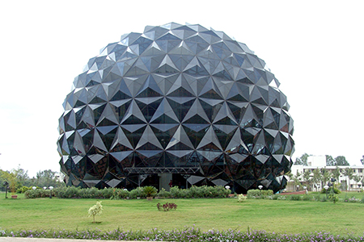
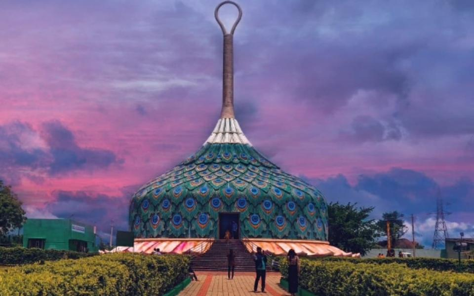
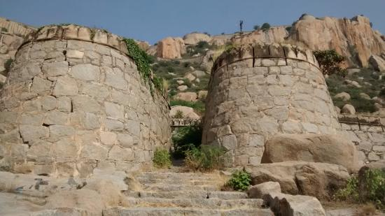
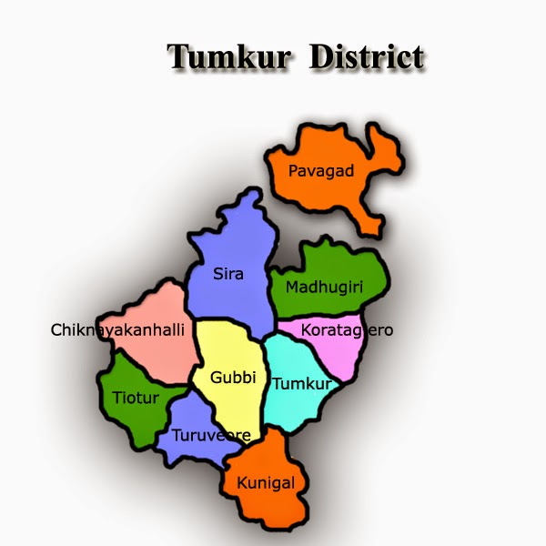

Tumkur
Tumkur, located in the southern state of Karnataka, India, is a city with a unique blend of tradition, modernity, and natural beauty. This bustling urban center has a rich history and offers several interesting aspects. Here are some details about Tumkur:
1. History and Heritage:
Tumkur has a significant historical background, with traces of its past dating back to ancient times.
The city has been influenced by various dynasties, including the Cholas, Hoysalas, and Vijayanagara
Empire. The city's heritage is reflected in its temples, forts, and archaeological sites.
2. Educational Hub:
Tumkur is home to several educational institutions, including Tumkur University, and numerous schools
and colleges. The city's commitment to education has made it a hub for students pursuing various academic
disciplines.

3. Siddaganga Math:
One of the most revered institutions in Tumkur is the Siddaganga Math. This institution not only provides
education but also serves as a symbol of social service. It is well-known for its philanthropic work and the
Siddaganga Mutt, which is a pilgrimage site for devotees.
4. Tumkur Fort:
The Tumkur Fort, with its historic significance, is a prominent attraction in the city. It is a testament to
the architectural marvels of a bygone era and offers a glimpse into the city's historical past.
5. Temples and Religious Sites:
Tumkur is dotted with temples and religious sites. The Sri Siddalingeshwara Swamy Temple, Gubbi, and
Devarayanadurga Hills are places of spiritual and natural significance.

6. Agribusiness and Industry:
Tumkur is an important hub for agriculture and agribusiness. The city's proximity to Bangalore has led to
industrial development, making it an emerging industrial and manufacturing center in Karnataka.
7. Natural Beauty:
The city is surrounded by scenic landscapes and hills. Devarayanadurga, a hill station near Tumkur, offers
a cool and peaceful escape with lush greenery and ancient temples. The Namada Chilume, a natural spring,
is another picturesque spot in the region.

8. Cultural Diversity:
Tumkur's population is diverse, with people from various backgrounds and cultures residing here. This diversity
is reflected in the local festivals, traditions, and cuisine.
9. Tumkur Food Specialties:
The city offers a delectable range of traditional Karnataka cuisine. Don't miss out on trying local dishes like
Ragi Mudde, a nutritious millet-based dish, and other South Indian delicacies.

Tumkur, with its historical charm, educational prominence, and natural beauty, stands as a city that beautifully
marries its past with the aspirations of the future. Whether you're interested in history, spirituality, education,
or simply enjoying the serene landscapes, Tumkur has something to offer to every traveler.
